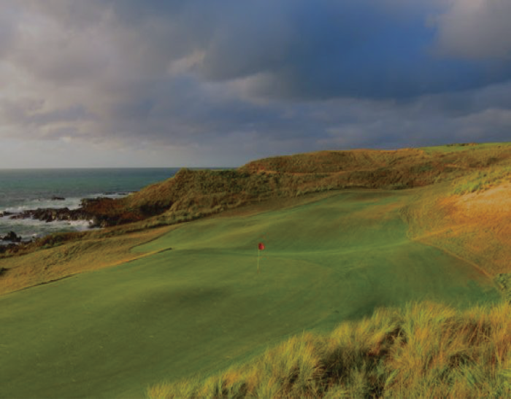

AUSTRALIAN GOLF CLUBS LOOKING TO ATTRACT NEW MEMBERS AFTER TOUGH DECADE FOR THE SPORT
By Scott Rollinson
October 21, 2016 4:50 PM
October is golf's equivalent of an open house, with clubs around the country throwing open their doors as they go on a membership drive.
One of the most popular games in the world, golf has been bleeding members for more than a decade as time and financial pressures take their toll on potential recruits.
It has forced some clubs to close their doors and others to merge with their neighbouring courses.
The game's governing body is steadfast though that golf is not dead - instead, they are now working on ways to attract a new breed of golfer.
"It had been declining really since 2000," said Steve Pitt, Golf Australia's chief executive
In 2006, 446,428 golfers were members of a local club. In the 10 years since, however, that number has fallen by almost 50,000.
But that is not the only number of concern for those running the game - more than 50 per cent of those currently a member of a golf club are aged above 55.
Pitt says those running the game realised they needed to take action.
"It's only a small decline, but it adds up over a period of time," he said.
"That was the trend in Australian sports and organised sport.
"I don't think we ever felt like we were in trouble but I think we felt like we needed to raise the profile of golf to attract members.
"We've seen clubs face challenges, we've seen costs continuing to go up and revenues not really growing to meet those costs."
The old club golfer was gone. No longer were people playing at the same time, with the same people, at the same club each week.
"Almost the majority of golfers don't fit that category anymore," Golf Tasmania's Simon Weston said.
T"Five or six hours on a Saturday is not as popular as it once was so clubs have to adapt."
After 25 years as a member of Kingswood Golf Club in Victoria, come 2018 John Mark will be walking a different fairway.
He is club golfer that has seen his club go through a merger to survive.
"Falling memberships, increasing costs, it's just one of those things that fees would have had to have gone up to a level that's unacceptable," he said.
"Some of the top sand-belt clubs (in Victoria) will never have an issue, but the other clubs I think are struggling as a whole to keep the clubs going."
John Mark was a supporter as his club merged with Peninsula Golf Club.
"It's kept the Kingswood name alive, it's kept the club alive," he said.
"It's given all the Kingswood members the opportunity to move to another location and keep playing golf."
Tourism push
Golf Australia say the membership numbers do not fully tell the story of the game's state of health.
While club numbers have slid over the past decade, golf tourism has blossomed.
"When we talk about golf tourism, there is a whole new opportunity there for Australia," Pitt said.
"We'd like to do more with the Federal Government around the tourism space.
"We think there is enormous opportunity to do that, we've seen New Zealand do a better job then what has happened in Australia to deliver results.
"We've got some remarkable golf courses, I think we've got around 10 in the top 100 in the world and some of the best venues in the world and Australia is a fantastic place to come and play golf because those venues are all pretty accessible."
Tasmania is one area ready to capitalise on the tourism boom.
"We have world class golf courses that people want to experience and they'll come back and bring their friends so it's great for Tasmanian tourism and golf in general," Weston said.
New ideas
"Golf has been a fairly conservative sport over a number of years, I think now we're starting to do more and be more open to new ideas, new ideas around membership and product offerings, so that will bear results I have no doubt," Pitt said.
Those new ideas are both simple and radical.
In the simplest form, clubs are offering flexible memberships, and trying to tailor memberships to meet the need of the individual.
"We're all time poor, we have so much going on in our lives and that's where sports have got to be flexible," Pitt said.
"For golf I think the key challenge is time but beyond that, how do you make clubs and facilities more family orientated?"
The more radical involves freshening up golf's image to attract new players.
The game has started more novelty offerings like foot golf (played with a soccer ball and large holes), swing fit (a combination of on-course fitness programs and golf techniques) and speed golf (where players run between shots to speed up the time a round takes).
"These ideas are still a bit embryonic, but they're growing all the time," Mr Pitt said.
There is no doubt that golf has been through a rough patch at a grassroots level.
Fittingly, a game that involves patience, is now waiting to see an upward swing.